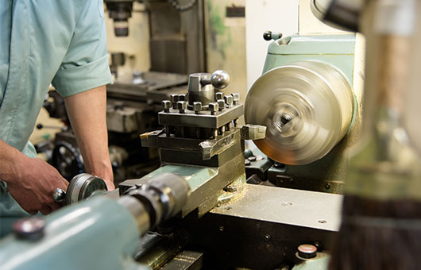

キャリア採用
（募集要項）CAREER
- HOME
- キャリア採用（募集要項）
キャリア採用（募集要項）

お客様のベストパートナーとして、個性的かつ新しいプラスチック製品・部品を創り出し、世に送り出し続けている三光化成株式会社。プラスチック精密部品・金型製作・プラスチック成形品の分野で、50年以上の歴史を持つ老舗メーカーです。
当社では年間を通じて、下記の通しキャリア採用を実施しております。あなたの意欲や適性、これまでのキャリア、スキル等を活かし、三光化成の次代を担う存在として力を発揮してくださる方をお待ちしています。
募集要項
| 募集職種 | 人事総務職（本社） |
|---|---|
| 仕事内容 | 人事（労務・賃金）管理業務・総務業務全般 会社組織全体を円滑に動かすために、人事・総務業務全般を幅広く担当して頂きます。 入社後は、ＯＪＴや社外研修を通じてひとつずつ仕事を覚えながら、経験を積んで頂きます。将来の幹部候補としてご活躍いただくことを期待します。 |
| 求人数 | 1名 |
| 資格・経験 | 不問 |
| 年齢 | 35歳以下（特に第二新卒者歓迎） |
| 学歴 | 大卒以上 |
| 勤務場所 | 本社 ※諸条件、給与、待遇、時間外などは、ハローワーク登録の求人票（求人番号13090-8578・13090-3162771）によります。 |
| 募集職種 | 金型設計（一関工場） |
|---|---|
| 仕事内容 | 金型設計に係る業務全般 顧客打ち合わせ、型発注・型まとめ、外注管理 CADによる金型設計、技術業務 |
| 求人数 | |
| 勤務場所 | 一関工場 ※諸条件、給与、待遇、時間外などは、ハローワーク登録の求人票によります。 |
| 募集職種 | CAM作業者（一関工場） |
|---|---|
| 仕事内容 | |
| 求人数 | CADデータ作成業務 NCプログラム作成業務 設計、金型製造との連携、3次元CADデータ |
| 勤務場所 | 一関工場 ※諸条件、給与、待遇、時間外などは、ハローワーク登録の求人票によります。 |
| 募集職種 | 金型製造（金型工場） |
|---|---|
| 仕事内容 | プラスチック金型製造業務 NC加工、プログラミング、 放電加工、電極設計 |
| 求人数 | |
| 勤務場所 | 金型工場 ※諸条件、給与、待遇、時間外などは、ハローワーク登録の求人票によります。 |
| 募集職種 | 成形作業（宮城工場） |
|---|---|
| 仕事内容 | プラスチック部品の成形業務 機械操作、検査 |
| 求人数 | |
| 勤務場所 | 宮城工場 ※諸条件、給与、待遇、時間外などは、ハローワーク登録の求人票によります。 |
| 募集職種 | 品質管理（宮城工場） |
|---|---|
| 仕事内容 | プラスチック製品の測定、品質管理業務 測定機、顕微鏡などでの検査測定 |
| 求人数 | |
| 勤務場所 | 宮城工場 ※諸条件、給与、待遇、時間外などは、ハローワーク登録の求人票によります。 |
| 募集職種 | 製造技術係（福島工場） |
|---|---|
| 仕事内容 | 金型メンテナンス作業・プラスチック成形用金型 金型の分解清掃 金型の修理 フライス、旋盤による金型の部品加工 |
| 求人数 | |
| 勤務場所 | 福島工場 ※諸条件、給与、待遇、時間外などは、ハローワーク登録の求人票によります。 |
| 募集職種 | 倉庫内入出庫管理（福島工場） |
|---|---|
| 仕事内容 | 出荷指示に基づき、出荷準備業務 倉庫内の管理業務 プラスチック成形部品のピッキング作業 出荷品のロット番号転記および出荷先、荷札の貼付作業 製品の倉庫内入出庫作業・フォークリフト使用 |
| 求人数 | |
| 勤務場所 | 福島工場 ※諸条件、給与、待遇、時間外などは、ハローワーク登録の求人票によります。 |
| 募集職種 | 成形技術者（福島工場） |
|---|---|
| 仕事内容 | プラスチック製品立ち上げ業務（新規金型の成形機条件設定、見極め、改善、量産品の立ち上げ） |
| 求人数 | |
| 勤務場所 | 福島工場 ※諸条件、給与、待遇、時間外などは、ハローワーク登録の求人票によります。 |
| 募集職種 | 成形オペレーター（福島工場） |
|---|---|
| 仕事内容 | プラスチック部品の製造業務（金型取り付け作業、成形機条件設定、簡単な目視検査） |
| 求人数 | |
| 勤務場所 | 福島工場 ※諸条件、給与、待遇、時間外などは、ハローワーク登録の求人票によります。 |
| 募集職種 | 生産管理（多治見工場） |
|---|---|
| 仕事内容 | 生産管理業務 プラスチック製品の出荷業務 事務作業（パソコン操作等） |
| 求人数 | |
| 勤務場所 | 多治見工場 ※諸条件、給与、待遇、時間外などは、ハローワーク登録の求人票によります。 |
| 募集職種 | 生産管理事務（多治見工場） |
|---|---|
| 仕事内容 | 生産管理における事務業務 梱包製品の仕分け、出荷業務 |
| 求人数 | |
| 勤務場所 | 多治見工場 ※諸条件、給与、待遇、時間外などは、ハローワーク登録の求人票によります。 |
| 募集職種 | プラスチック成形工Ⅰ（多治見工場） |
|---|---|
| 仕事内容 | プラスチック成形加工（三交替勤務） |
| 求人数 | |
| 勤務場所 | 多治見工場 ※諸条件、給与、待遇、時間外などは、ハローワーク登録の求人票によります。 |
| 募集職種 | プラスチック成形工Ⅱ（多治見工場） |
|---|---|
| 仕事内容 | プラスチック成形加工（射出成形作業の前段取り、金型交換、条件出し等） |
| 求人数 | |
| 勤務場所 | 多治見工場 ※諸条件、給与、待遇、時間外などは、ハローワーク登録の求人票によります。 |
| 募集職種 | 製造技術（多治見工場） |
|---|---|
| 仕事内容 | プラスチック金型の保守・メンテ・分解・清掃 |
| 求人数 | |
| 勤務場所 | 多治見工場 ※諸条件、給与、待遇、時間外などは、ハローワーク登録の求人票によります。 |
| 募集職種 | 射出成形・金型技術者（専門管理職候補） |
|---|---|
| 仕事内容 | プラスチック部品、射出成形金型 金型起工～製作のとりまとめ、外注管理 金型設計に関する技術業務 受注部品の試作～量産立上げ |
| 求人数 | |
| 資格・能力・経験 | 設計経験者（射出成形金型）優遇 海外勤務経験あれば尚可 |
| 勤務場所 | 国内各事業所（応相談）を拠点として 海外赴任の勤務あり 国内生産拠点（東京都、埼玉県、岐阜県、福島県、岩手県など） 海外生産拠点（中国大連、中国蘇州、メキシコ） ※諸条件（給与、待遇、時間外など）は、ハローワーク登録の求人票によります。 |
勤務
| 休日・休暇 |
|
|---|---|
| 給与 | 経験、能力により優遇 |
| 待遇 |
|
| 福利厚生 |
|
| 研修 | 社内外研修各種 |